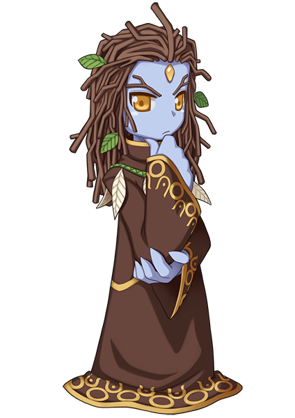

画像にリンクがはってあるものは、クリックすると別窓で大きめサイズが表示されます。
 |
 |
| アジフ | 猫の手職員 |
 |
 |
| シャイ | レビオルディル |
|  |  |
| エトル | モーラ象 |
 |
 |
| ニーズヘッグ（竜） | ニーズヘッグ（人） |
 |
 |
| タマリン | テューリアン |
 |
 |
| アルプオカート | マギスティン |
 |
| マークイシャ |
back
(c) Gravity Co., Ltd. & Lee MyoungJin(studio DTDS). All rights reserved.
(c) GungHo Online Entertainment, Inc. All Rights Reserved.
当コンテンツの再利用（再転載・配布など）は、禁止しています。